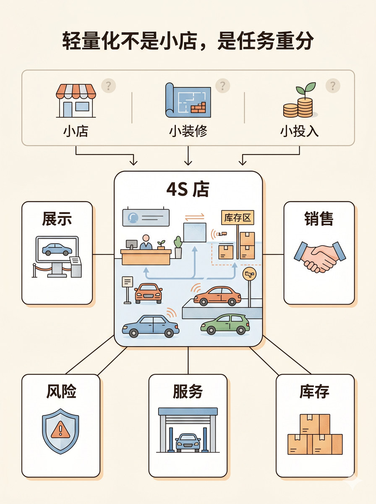
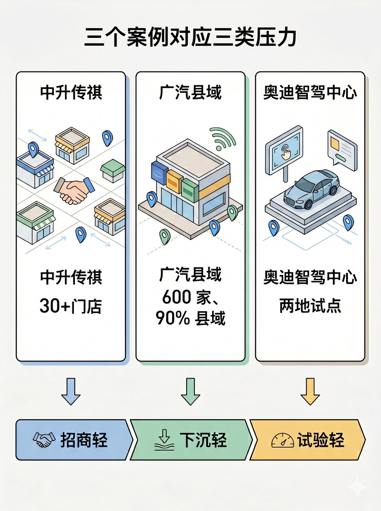
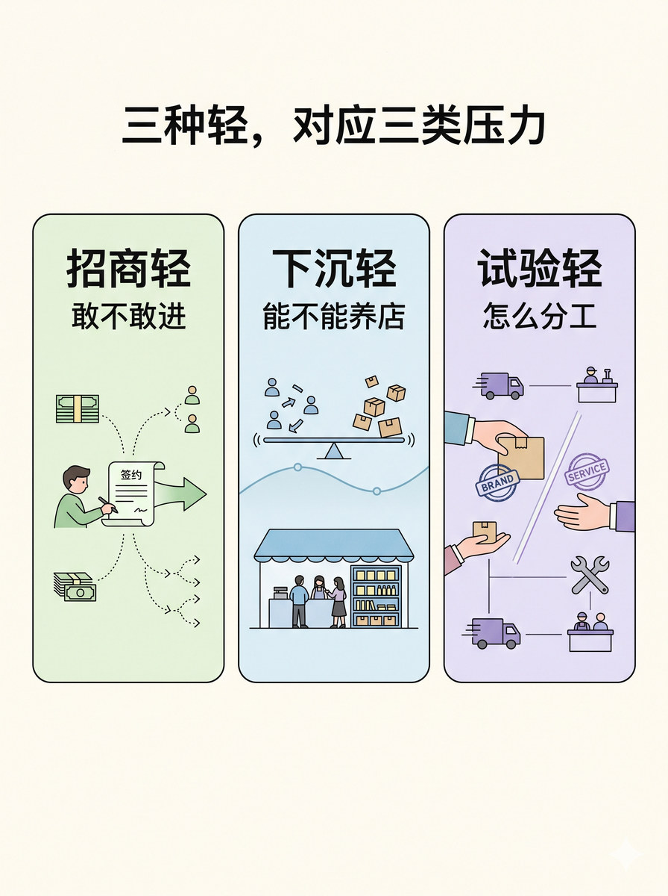

历史 Nano Banana 竖版短视频配图基线：区分直营网点、代理和合作伙伴等渠道类型并保持关系准确
# D3 分块段 01 Prompt 生成一张 3:4 竖版静态配图。 整体布局采用顶部居中标题 + 顶部窄误读条 + 中部中心主体卡 + 外围五张任务卡的结构，阅读顺序从上到下，再由中心向外发散。 容器结构包括：顶部窄横条三分段小标签；中部大圆角主体卡；环绕主体的一圈五张小任务卡。 视觉区块内容：顶部误读条画三个简化误读小图标，分别对应小门店、小装修、小投入，配轻分隔线、弱化标签底块、轻问号符号。中部主体卡画一间简化的传统 4S 店前台与服务综合体，配店内车辆、服务台、库存区信号、轻运营流线。外围五张任务卡分别画展示、销售、库存、服务、风险，对应展台、成交握手、库存箱、维修工位、风险盾牌等小图标。 关系表达：顶部误读条用短箭头下连中心主体；中心主体用 5 条发散线连接外围五张任务卡，必须让任务从 4S 店拆开的关系一眼可见。 图中只允许出现这些文字：轻量化不是小店，是任务重分、4S 店、小店、小装修、小投入、展示、销售、库存、服务、风险。 不需要地图，不要出现任何地理区域轮廓或地图底图。 不要广告感，不要 logo，不要水印，不要 AI 字样，不要无意义英文；不要出现任何长句解释、新闻背景、品牌名；不要画成真实门店广告图，不要画成豪华门店效果图，不要把主体做得过于写实，不要让五张任务卡变成纯文字框。 整体视觉采用柔和、克制、轻叙事的 clean editorial illustration，模块边界清楚但不过板，flat illustration，light texture，商业媒体插画感。

# D3 分块段 02 Prompt 生成一张 3:4 竖版静态配图。 整体布局采用顶部居中标题 + 中上部三张并列案例卡 + 底部横向三压力条的结构，阅读顺序是左案例、中王例、右案例、底部压力条。 容器结构包括：三张等大案例卡；中下部三条短连接箭头；底部三段对应压力条。 视觉区块内容：左上案例卡画经销商合作门店网络的轻量招商场景，配门店点位、合作握手、小数字锚点、轻扩张箭头。中上案例卡画县域综合店与多品牌共存的轻量门店场景，配多品牌门头抽象块、县域门店、小数字锚点、覆盖扩散信号。右上案例卡画智驾中心式前端触点场景，配展示车辆、体验屏、小数字锚点、轻技术触点线条。底部三压力条分别画招商轻、下沉轻、试验轻，每段配最小类型图标。 关系表达：三张案例卡各用一条短箭头向下连接到各自对应的压力条，连线必须一一对应，不要交叉混乱。 图中只允许出现这些文字：三个案例对应三类压力、中升传祺、广汽县域、奥迪智驾中心、30+门店、600 家、90% 县域、两地试点、招商轻、下沉轻、试验轻。 不需要地图，不要出现任何地理区域轮廓或地图底图。 不要 logo，不要海报化，不要水印，不要 AI 字样，不要无意义英文；不要出现新闻来源、报道说明、长句注释；不要出现真实品牌 logo；不要把 30+ 门店画成已全国铺满，不要把目标口径画成既成事实全覆盖地图，不要把右侧案例做成科技展厅海报。 整体视觉采用清晰、理性、模块边界明确的 clean editorial illustration，轻等距结构感但不过硬，flat illustration，light texture。

# D3 分块段 06 Prompt 生成一张 3:4 竖版静态配图。 整体布局采用顶部居中标题 + 中部三张等大并列卡的结构，阅读顺序从左到右。 容器结构包括：三张统一尺寸的圆角模块卡，左中右并列，整体粒度一致。 视觉区块内容：左侧卡画轻投入招商组合，配低成本进入、小分支机会、轻向前箭头，对应招商轻和敢不敢进。中间卡画县域门店存活场景，配分摊后的流量与库存压力、轻稳定状态线，对应下沉轻和能不能养店。右侧卡画品牌直控与本地服务分工组合，配交接动作、服务网络、轻边界线，对应试验轻和怎么分工。 关系表达：三张卡不使用主箭头，通过统一标题、统一尺寸和一致内部结构形成三种轻与三类问题的一一对应关系。 图中只允许出现这些文字：三种轻，对应三类压力、招商轻、下沉轻、试验轻、敢不敢进、能不能养店、怎么分工。 不需要地图，不要出现任何地理区域轮廓或地图底图。 不要 logo，不要海报化，不要水印，不要 AI 字样，不要无意义英文；不要出现案例细节和长句解释；不要回放新闻案例；不要让三张卡的视觉粒度失衡。 整体视觉采用理性、整洁、模块均衡的 clean editorial illustration，卡片边界统一，flat illustration，light texture。
